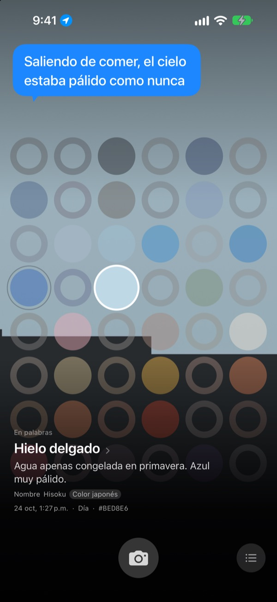
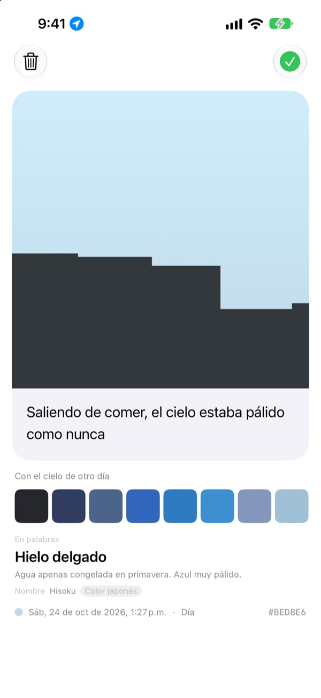
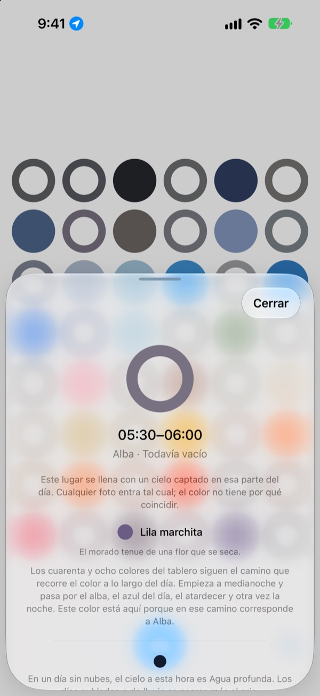
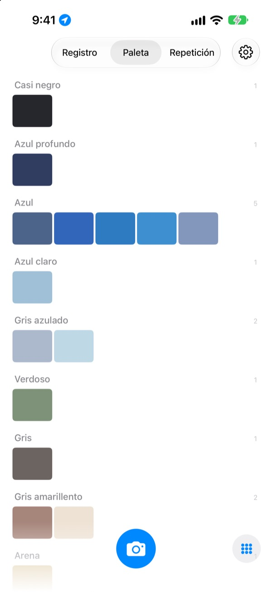

¿De qué color fue
el cielo hoy?
Toma una foto del cielo y, en un tablero de cuarenta y ocho casillas, la de esa hora se llena con el color que captaste. También recibe un nombre que se ve con solo leerlo, como Hielo delgado, Azulejo de alberca o Caqui maduro.
Gratis. Sin cuenta y sin iniciar sesión.

Prueba el tablero
Toca una casilla para ver a qué momento del día pertenece. Agrega una foto del cielo para llenar la casilla de ahora y luego avanza los días para ver cómo cambia el tablero.
Ves el cielo todos los días, pero no recuerdas ni un color
El cielo camino al trabajo, el de la salida después de comer: para la noche ya no sabes de qué color eran. Las fotos del cielo que sí tomaste se pierden entre todas las demás. SkyDex las junta como colores y muestra en un solo tablero el camino que siguió el cielo de hoy.
Cada cielo recibe un nombre
Cada color recibe primero un nombre que se puede imaginar, como Hielo delgado, Azulejo de alberca o Caqui maduro. Debajo aparece un nombre con origen: un color tradicional coreano o japonés, un pigmento o un color web.
Si la coincidencia es cercana, dice Nombre; si no, con honestidad, Nombre más cercano.

Deja una línea
Justo después de la foto se abre una tarjeta. Escribe lo que pensabas al mirar hacia arriba y volverá a flotar sobre el cielo cada vez que toques esa casilla del tablero.
También puedes poner sobre esta foto el color del cielo de otro día y compartir el resultado como imagen.

Las casillas vacías te guían
Toca una casilla vacía para saber a qué momento del día corresponde y qué color buscar. También te dice cómo se ve el cielo a esa hora en un día despejado, ajustado a la salida y la puesta del sol donde estás.
El color no tiene que coincidir. El gris de un día nublado también es el color del cielo de ese día.

Registro, paleta, repetición
Recorre tus cielos en orden y reúne tus colores en paletas por familias, como azul, gris y arena. Si fotografías la misma hora otro día, los dos cielos quedan lado a lado.
Los widgets de la pantalla de inicio te muestran de un vistazo el tablero de hoy y el cielo de hoy.

Empezar toma tres pasos
- 1
Mira hacia arriba
Toca el botón de la cámara debajo del tablero y deja que el cielo llene el cuadro.
- 2
Se llena una casilla
La casilla de ahora toma el color que captaste y recibe un nombre.
- 3
Deja una línea
En la tarjeta que se abre, escribe lo que pensaste al ver ese cielo.
Así divide el día el tablero
- Medianoche · 00:00–05:00
- seis casillas
- Alba · 05:00–08:00
- seis casillas
- Día · 08:00–16:00
- doce casillas
- Tarde · 16:00–18:00
- seis casillas
- Atardecer · 18:00–21:00
- doce casillas, una cada 15 minutos
- Noche · 21:00–24:00
- seis casillas
Alrededor del atardecer, cuando el cielo cambia rápido, las casillas van apretadas; en plena noche, cuando casi no se mueve, son amplias. Arriba está la medianoche, y el día corre hacia abajo.
Preguntas frecuentes
¿Cómo se llena una casilla?
Un cielo que fotografías hoy llena la casilla de la hora en que lo tomaste, aunque el color no sea el que esperabas: a esa hora el cielo de verdad era así. Los cielos de días anteriores entran por color: si uno se parece lo suficiente al color de una casilla, la llena, y cada cielo llena una sola casilla.
Una casilla que ayer estaba llena hoy está vacía.
El tablero siempre es hoy. Una casilla que un cielo de ayer llenó por su hora vuelve a emparejarse solo por color cuando cambia el día. Por eso algunos días el tablero está casi lleno y otros se ve vacío. Tus fotos no se perdieron: todos tus cielos están en el Registro, y ordenados por color en la Paleta.
Mis casillas llenas se están desvaneciendo.
Es a propósito. Una foto conserva su color real durante una semana y luego se desvanece despacio a lo largo de las ocho semanas siguientes. No se borra y nunca desaparece del todo. Vuelve a fotografiar el cielo a esa hora y la casilla recupera su color al instante. No hay racha que romper ni puntos que recuperar.
¿El color tiene que coincidir?
No. No hay aprobado ni reprobado. Todas las fotos se guardan, y el gris de un día nublado también es el color del cielo de ese día.
¿Por qué pide mi ubicación?
Solo para mostrarte, al tocar una casilla vacía, el color de un cielo despejado a esa hora, ajustado a la salida y la puesta del sol donde estás. Usa una ubicación aproximada, al kilómetro, y las coordenadas nunca se agregan a tus fotos. Si dices que no, todo sigue funcionando, con Seúl como referencia.
¿Puedo agregar un cielo de mi fototeca?
Sí. Un cielo que eliges en Fotos en lugar de la cámara también se recorta en cuadrado y llena la casilla de ahora, igual que uno que acabas de tomar.
¿Cómo elimino una foto?
Abre la foto y toca Eliminar, o deslízala hacia la izquierda en el Registro. Se borra del dispositivo y de iCloud a la vez. Si eliminas la app, la copia en iCloud se queda, así que tus cielos regresan al reinstalarla.
¿Qué pasa si cambio de dispositivo?
Tus cielos se guardan en tu propio iCloud, así que pasan a un dispositivo nuevo con la misma cuenta de Apple. No hay cuenta ni servidor, y tus fotos y colores nunca se envían al desarrollador. Sin anuncios ni rastreo.
¿De verdad es gratis?
Sí, todas las funciones son gratis. Si te gusta, puedes dejarle una propina al desarrollador desde la app, pero la propina no desbloquea nada.
¿En qué dispositivos funciona?
En iPhone con iOS 17.0 o posterior, solo en vertical.
Errores, algo que se comporta raro o cualquier cosa que quieras decir: escribe a leeo@kakao.com. Si cuentas qué estabas haciendo y qué versión de iOS tienes, es mucho más fácil encontrar el problema.